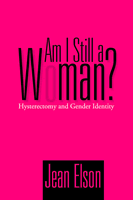

<body bgcolor="#FFFFFF" text="#000000" link="#0000FF" vlink="#CC0000" alink="#CC0000"><center><hr width="350" size="1" align="center" noshade>What makes a woman a woman?<hr width="350" size="1" align="center" noshade><p><a href="https://cdcshoppingcart.uchicago.edu/Cart/ChicagoBook.aspx?ISBN=9781592132102&&PRESS=temple" target="_top">Buy this book!</a> | <a href="https://cdcshoppingcart.uchicago.edu/Cart/Cart.aspx?PRESS=temple" target="_top">View Cart</a> | <a href="https://cdcshoppingcart.uchicago.edu/Cart/Cart.aspx?PRESS=temple" target="_top">Check Out</a></p><p></p></center><!--none//--><h1>Am I Still a Woman?</h1>
<H2>Hysterectomy and Gender Identity</H2>
<h3>Jean Elson</h3>
<P>cloth 1-59213-210-3 $75.50, Dec 03, <FONT COLOR=#990033>Available</FONT>
<br>paper 1-59213-211-1 $27.95, Jan 04, <FONT COLOR=#990033>Available</FONT>
<BR> 264 pp
5.5x8.25
7&nbsp;tables
</P><BLOCKQUOTE><I>"A strong addition to the literatures on women's health and gender identity, </i>Am I Still a Woman<i> is a readable, original contribution to feminist scholarship. Impressive and fascinating, this book is fluidly written and at times hard to put down. It should enjoy a wide audience."</i>
<br>&#151<b>Alexandra Dundas Todd</b>, Professor and Chair, Sociology Department, Suffolk University, and author of <i>Intimate Adversaries: Cultural Conflicts Between Doctors and Women Patients</i><i></I></BLOCKQUOTE>
<p>Recent scientific findings regarding the potential dangers associated with hormone replacement therapies bring renewed attention to the relationship between women's bodies and gender identity. In <i>Am I Still A Woman?</I> Jean Elson offers the testimony of women who have thought deeply about this issue as a result of gynecological surgery.
<p>For the women in this book, gynecological surgery for benign conditions proved to be a crisis that prompted questions about the meanings of sexual and reproductive organs in relation to being female and feminine. Is a woman who no longer menstruates still a woman? What about a woman who can no longer bear children? Elson looks closely at the differences in responses to understand the impact of surgery and lost fertility on sexuality and partnerships as well as the steps some women take to deal with a sense of a stigmatized identity. Whether they reconceptualized their old notions of what it means to be a woman or put a new focus on making themselves attractive, they made conscious efforts to reclaim their female identity and femininity. This book provides a wealth of insight into the choices women make regarding gynecological surgery and maintaining their sense of themselves as women.
<BR>&nbsp;<h2>Excerpt</h2><P>Excerpt available at <a href="http://www.temple.edu/tempress">www.temple.edu/tempress</a></p>
<BR>&nbsp;<h2>Reviews</h2>
<p><i>"</i>Am I Still a Woman<i> engages absolutely fundamental questions about body, gender, and identity. The subject matter is certainly important since about half a million women a year have one or another version of an hysterectomy. Lots of women will find this work interesting because it so thoroughly touches on their lives. Others will want to read the book simply because it speaks to how women think about being a woman. Elson has wonderful insight and provides an honest rendering of diverse experiences, interpretations and feelings."</i>
<br>&#151<b>David Karp</b>, Professor of Sociology, Boston College and author of <i>Speaking of Sadness: Depression Disconnection, and the Meanings of
Illness</i> and <i>The Burden of Sympathy: How Families Cope With Mental Illness</i>
<p><i>"[A] must read for anyone considering a hysterectomy, as well as for sexuality professionals who are interested in women's health issues."</i>
<br>&#151<b><i>Contemporary Sexuality</i></b>
<p><i>"...very useful for undergraduates or scholars new to this area of medical social history."</i>
<br>&#151<b><i><a href="http://www.findarticles.com/p/articles/mi_m2294/is_1-2_52/ai_n13607180" target="new">Sex Roles</a></i></b>
<p><i>"Elson's excellent book provides a strong and needed contribution to our understanding of the body in social life."</i>
<br>&#151<b><i>Gender & Society</i></b>
<p><i>"[A] highly readable book, important to women's health and to the sociology of the body�. [it] is a lively, compelling book."</i>
<br>&#151<b><i>Contemporary Sociology</i> symposium</b> on <i>Am I Still a Woman?</i>
<p><i>"This is a beautifully written, thoughtful and deeply moving book�.powerful, lucid and fascinating."</i>
<br>&#151<b><i>Contemporary Sociology</i> symposium</b> on <i>Am I Still a Woman?</i>
<p><i>"[Elson has opened] intriguing new windows for viewing both hysterectomies and the construction of womanhood in our society."</i>
<br>&#151<b><i>Contemporary Sociology</i> symposium</b> on <i>Am I Still a Woman?</i>
<p><i>"Elson's project engages questions at the heart of the relationship between biology and gender... Her book demonstrates that gender identity emerges from a complex relationship between biological markers and cultural expectations of women."</i>
<br>&#151<b><i>Feminist Collections</i></b>
<BR>&nbsp;<h2>Contents</h2><P>
<p>Acknowledgments
<br>1. "To Have and Have Not": Perspectives on Hysterectomy and Oophorectomy
<br>2. "Hormonal Hierarchy": Stratified Stigma Following Hysterectomy
<br>3. An "Ovary Prosthesis"? The Meanings of Estrogen Replacement Therapy
<br>4. "Badge of Femininity"? Menstruation
<br>5. "Women's Work"? Motherhood and Gender Identity
<br>6. "Feel Like a Woman"? Sexuality and Gender Identity
<br>7. Biographical Work and Impression Management: Maintaining and Reclaiming Gender Identity
<br>8. "Am I Still a Woman?"
<br>Postscript: The Issue of Medical Necessity
<br>Appendix Research Methodology
<br>Notes
<br>References
<br>Index
</P><BR>&nbsp;<H2>About the Author(s)</H2>
<table><tr><td valign="top"><img src="/tempress/authors/1587_au.gif" height="90" width="75"></td><td width="100%" valign="middle"><p><b>Jean Elson</b> teaches sociology at the University of New Hampshire.</P></td></tr></table>
<BR><H2>Subject Categories</H2>
<p><A HREF="/tempress/sociology.html" TARGET="_top">Sociology</a>
<BR><A HREF="/tempress/gender.html" TARGET="_top">Gender Studies</a>
<BR><A HREF="/tempress/health.html" TARGET="_top">Health and Health Policy</a>
</p>
<p align="center"><a href="https://cdcshoppingcart.uchicago.edu/Cart/ChicagoBook.aspx?ISBN=9781592132102&&PRESS=temple" target="_top">Buy this book!</a> | <a href="https://cdcshoppingcart.uchicago.edu/Cart/Cart.aspx?PRESS=temple" target="_top">View Cart</a> | <a href="https://cdcshoppingcart.uchicago.edu/Cart/Cart.aspx?PRESS=temple" target="_top">Check Out</a></p><p><font face="Arial" size="1"><a href="copyright.html" onMouseOver="window.status='Web Copyright Policy';return true;" onMouseOut="window.status=''" title="Web Copyright Policy">&copy;</a> 2015 <a href="http://www.temple.edu" target="new" onMouseOver="window.status='Link to Temple University home page';return true;" onMouseOut="window.status=''" title="Link to Temple University home page">Temple University</a>. All Rights Reserved. http://www.temple.edu/tempress/titles/1587_reg.html</font></p>